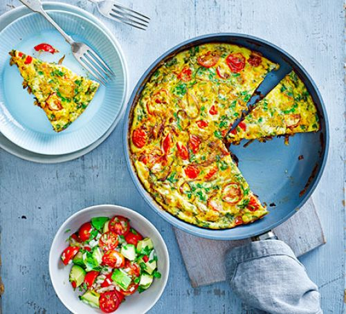
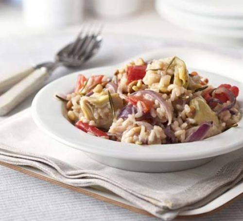
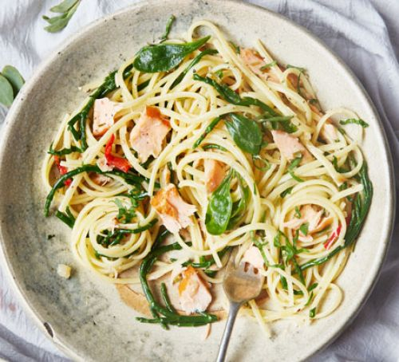
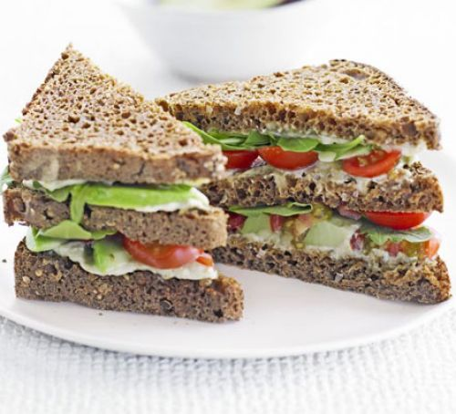

Like a car, your brain needs quality fuel to run efficiently. When it comes to your job, working more efficiently can help you earn more, since high achievers are usually first in line for promotions and raises. One 2012 study published by Population Health Management found that eating an unhealthy diet puts you at a 66% increased risk of productivity loss.
What you eat has an impact on your brain, including the parts that regulate mood. Foods rich in vitamins and minerals, such as fruits, whole grains and vegetables, have been associated with an overall lower risk of depression, as have foods rich in omega-3 fats, such as nuts, salmon and other fatty fish.Eating healthy can reduce stress too.
The same diseases that make you feel bad and cost a lot of money may also lower your life expectancy. A diet of fruit and vegetables, in combination with exercise, was associated with extended life expectancy for women in their 70s, according to a study in the Journal of the American Geriatrics Society.
Consuming foods from a wide variety of sources helps ensure your body has the nutrients it needs to avoid these health problems.Obesity is not the only nutrition-related cause of disease onset and progression. Too much or too little of certain nutrients can also contribute to health issues.
Healthy lifestyle habits are vital for maintaining a youthful, attractive appearance. For example, vitamin A supports healthy skin, hair and nails, while antioxidants like vitamin C and selenium help prevent free radical damage involved in the aging process. Healthy lifestyle choices like eating a balanced diet and exercising regularly also help prevent obesity.
Mood and cognitive function play an important role in quality of life, productivity and healthy interpersonal relationships. According to the "American Journal of Psychiatry, " a Western diet high in saturated fat, refined carbohydrates and alcohol is associated with higher levels of depression and anxiety in women than a diet rich in fruit, vegetables and whole grains.
A rescue recipe for when there's nothing in the fridge, or when you fancy something cheap, delicious and filling
Check out the recipe bbccgoodfood
A spicy twist on a simple frittata recipe, with Masala paste, coriander and plump cherry tomatoes. Pair it with our avocado salsa for a light and budget-friendly supper
Check out the recipe bbccgoodfood
This superhealthy, stir-fried side makes a tasty vegetarian supper served with rice and dhal
Check out the recipe bbccgoodfood
Give your risotto a healthy makeover with this easy low-fat recipe
Check out the recipe bbccgoodfood
A great light lunchtime salad that uses everyday ingredients in a new and interesting way
Check out the recipe bbcgoodfood
Juicy, salty samphire works really nicely along with the tender fish in this lemony pasta dish
Check out the recipe bbcgoodfood
A vibrant salad packed with yellow and red peppers, colourful onion, beef cooked to your liking and healthy grains
Check out the recipe bbcgoodfood
This healthy sandwich is packed full of goodness to keep you going until dinner
Check out the recipe bbcgoodfood
For more healthy recipes, check out at bbcgoodfood
Blueberries high in fiber, and contain vitamin C, vitamin K,and manganese. They're one of the highest-ranking sources of antioxidants.
Get the ingredeints from alaskafromscratch
PB&J for breakfast? Trust us. You'll have no problem slurping this one down—and that scoop of protein powder will keep you satisfied up until lunchtime.
Get the ingredeints from fitfoodiefinds
One of my absolute favorite fruits is the mango!Use almond milk in place of cow’s milk for a dairy-free breakfast in just five minutes.
Get the ingredeints from realsimple
The chia seeds with refreshing resberries will start to plump if the smoothie sits for too long, so drink up immediately after blending.
Get the ingredeints from realsimple
For more smoothie choice, check out at bbcgoodfood